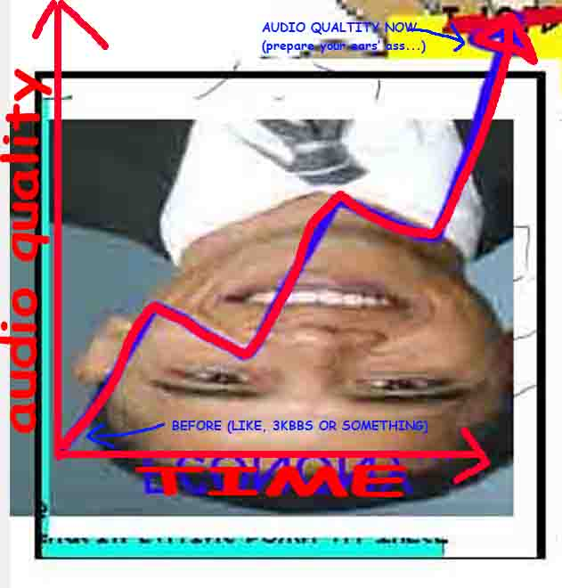

Let me tell you a story about a webcomic called Homestuck. The fourth in a series of “MS Paint Adventures” authored by Andrew Hussie from 2006 to 2016, it became wildly successful, in part because of its eclectic use of web technology like Adobe Flash and GIF animations.
However, with Flash finally being phased out at the end of 2020, Homestuck is in a precarious state. While there have been official attempts to preserve aspects of the original experience by VIZ Media (who have published Homestuck since 2018), the results have been mixed. With extra content scattered around the web in various states of decay, a solution was needed to preserve Homestuck's one-of-a-kind presentation and flair, for both returning readers and those new to the story.
The Unofficial Homestuck Collection is a completely offline desktop program, designed exclusively to run Homestuck. Flashes? We got 'em. The collection runs Flash content natively, providing the truest available Homestuck experience. In fact, it runs everything natively. It
Don't think we'd be content stopping at just Homestuck. The collection contains the other MS Paint Adventures, official Homestuck side-stories, and a garguantuan array of goodies for the enquiring reader. Seriously, the list is so long. It's SO long. It's SO LONG.
Always wanted to try Homestuck? Overwhelmed by all the side-stories, spinoffs, and sequels? We've got your back:
The application is a roughly 70 MB download, and requires the Asset Pack V1 to function. Future updates to the application may require an updated Asset Pack.
Windows - V1.0.0The Asset Pack V1 is a 3.68 GB download, and it's necessary in order to run the application. It contains all the text, images, animations, and everything else!
Download it from one of the following links:
That's an extremely good question. The issue with this is that it's so damn large I can't even remember everything inside off the top of my head. Here's a by-no-means exhaustive list:
No! The Unofficial Homestuck Collection is an entirely* offline archive, that runs in a program designed to look and feel exactly like a web browser. Why go through all this effort? Well, Flash isn't exactly gonna work anywhere else! Giving an entirely self-contained sandbox to run in is the most effective way to keep it running safely, forever. Having total control over the environment also has a few other benefits ;)
*Okay, there is ONE thing it connects to the internet for: the music database allows you to legally stream music directly from the official Bandcamp, right from within the app. These are the compromises we have to make for cool features.
That's right! Well, almost. The Unofficial Homestuck Collection is actually split into two downloads: the desktop application itself, and the Asset Pack. The application is completely open source, and you can play around the repository as much as you want over here. It's all GPL-3.0, so fork it, request features, do whatever! The Asset Pack on the other hand, is a 4 gigabyte bundle of pretty much all the copyrighted content. To get the archive functioning, you'll need both.
Well... Yeah. Almost definitely. I don't own the rights to Homestuck, or pretty much anything in this collection. That's the biggest reason for the split between the application and the assets: The program itself contains no copyrighted content, and should theoretically be immune to anything that gets thrown at it. That said, I really hope it doesn't have to come to that! Homestuck is suffering with the decline of Flash, and as long as it exists on the internet, these problems will be inherent to it. The ideal outcome for this collection is that it keeps Homestuck alive for people who may otherwise have given up on it, so they can continue to support all the official channels going forward. It's difficult to gather new fans for an old and broken webcomic, so hopefully this can contribute some to that talley.
You! Giving to the Homestuck team, that is. The new age of Homestuck is going strong, and it needs your support to continue. I consider the Epilogues, HS^2, and the various games released over the past few years to be under active maintenance, and an ongoing source of income for the creators. Including those in the collection would feel scummy. The main reason it exists is to prevent the technological decay of Homestuck, not to "stick one to the man" or some garbage. Need to read the Epilogues offline? They made a book for that! It's literally just text! And speaking of books, go and check out Viz's line of deluxe Homestuck hardcovers. They have tons of author commentary you won't find in the collection, because again, I'm really not about harming these guys financially.
{kind=link}